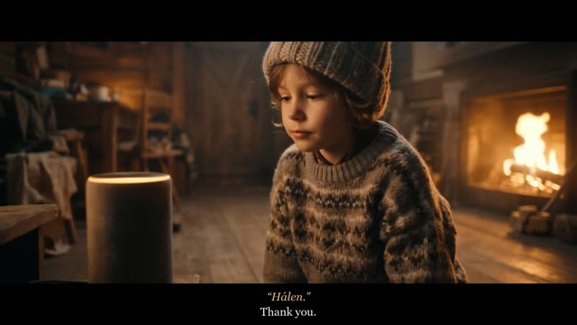
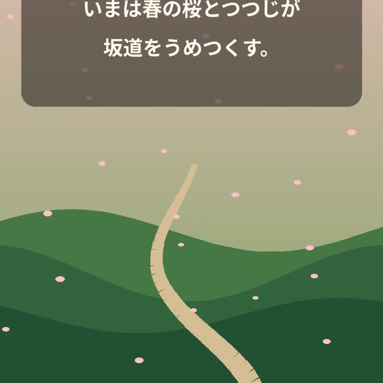

SHOTARO TAKAKURA
AI filmmaking · writing · motion graphics — Tokyo, Japan
Showreel 2026 (1:12). Download MP4
Films

The Last Word
2089. The last speaker of a mountain language has died, and the only one who still remembers it is an old home AI. A hearing declares the language dead; a child by a fireplace proves it is still alive.
Script, edit and original score by me. Stills generated with Gemini, motion with AKOOL image-to-video and talking photo, extra voices with edge-tts. The language “Kaelun” is fictional.

Kitaku no Oshi — Three Hills of Kita Ward
A hand-built motion-graphics piece about a ward in Kumamoto: a battlefield slope now covered in cherry blossoms, the biggest watermelon fields in Japan, and a hot-spring town that has been running since the Meiji era.
In development
Lost Property, Tomorrow
At the last station on a Tokyo commuter line, a night clerk in the lost-and-found office starts receiving items that people will lose tomorrow — until she finds a tag with her own name on it. Script, 17-shot list and subtitles are written; shots will be generated in Cascade with Seedance.
Other work
- In the Black — browser game with design document and budget (ZOUD GameLab jam, 2026)
- Veil — hybrid on-device AI project (#BuildHybridAI 2026), video
- Phantom Watt Hunter — standby-power audit tool, video
- LessonPack — offline language lessons for shared phones, video
- Pause Before Pay — on-device scam-message checker, video
- GitHub: Class-now